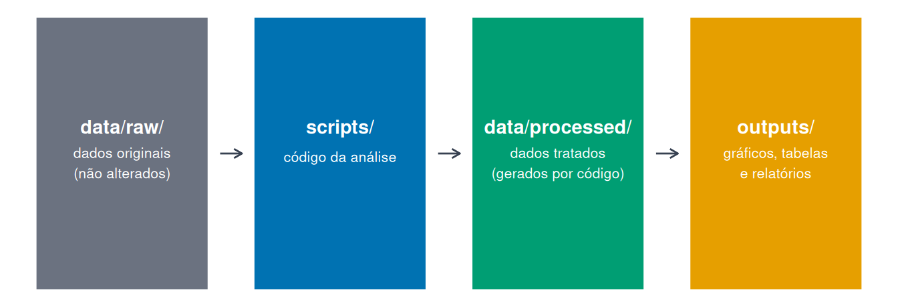
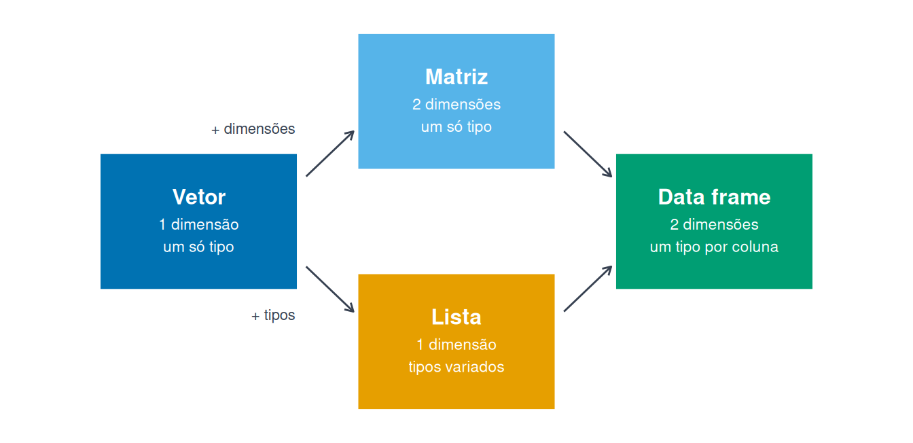

ls() # lista os objetos da sessão
rm(x) # remove um objeto
rm(list = ls()) # remove todos os objetos da sessão1 Introdução ao R e RStudio
Módulo: 1 | Carga horária: 10 horas.
Neste módulo, você se familiarizará com o ambiente de desenvolvimento RStudio, aprenderá a trabalhar com os principais tipos e estruturas de dados do R, conhecerá boas práticas para organizar seus projetos e escreverá suas primeiras funções reutilizáveis.
Objetivos de aprendizagem. Ao final deste módulo, você será capaz de:
- instalar o R e o RStudio e reconhecer a função dos principais painéis do RStudio.
- usar o R para realizar operações aritméticas, lógicas e de comparação e consultar a documentação das funções.
- organizar um trabalho de análise em um Projeto RStudio com uma estrutura padronizada de pastas.
- reconhecer os principais tipos de dados e criar e manipular vetores, data frames, matrizes e listas.
- importar um arquivo CSV e realizar uma primeira inspeção dos dados.
- criar funções simples e reutilizáveis.
Pacotes utilizados. A maior parte deste módulo utiliza apenas funções do próprio R. Para ilustrar o processo de instalação de pacotes, utilizaremos o tidyverse, uma coleção voltada à importação, manipulação e visualização de dados que reúne pacotes como dplyr, ggplot2 e readr, entre outros.
A instalação do tidyverse também instala os principais pacotes que compõem essa coleção. A instalação e o carregamento de pacotes serão abordados no Capítulo 5.
Conjunto de dados utilizado no módulo. Os exemplos e exercícios utilizam uma base fictícia de estudantes e escolas estaduais do Paraná, criada para reproduzir situações comuns encontradas em bases reais:
| Arquivo | Conteúdo |
|---|---|
| alunos_2023.csv | Base de estudantes, com erros de digitação, duplicatas e códigos de ausência |
Para acompanhar os exemplos e exercícios no RStudio, baixe o arquivo e salve-o na pasta data/raw do seu projeto. A criação de um projeto será explicada no Capítulo 5. No Editor de R, o arquivo já está disponível.
2 Sobre o R e o RStudio
O R é uma linguagem de programação voltada à análise de dados, à estatística e à produção de resultados reproduzíveis. Algumas características ajudam a explicar sua ampla utilização:
- é livre e gratuito, de código aberto, o que evita custos de licença.
- funciona em Windows, Linux e macOS.
- é mantido pela R Foundation (R Core Team 2026) e utilizado por pesquisadores, professores, estudantes, empresas e órgãos públicos.
- conta com milhares de pacotes que acrescentam funções, dados e métodos de análise.
- permite produzir resultados de forma reproduzível, incluindo gráficos, tabelas, relatórios e outros produtos.
O RStudio não é a linguagem R. Ele é um ambiente de desenvolvimento que reúne, em uma única interface, editor de código, console, visualização de objetos, gráficos e documentação. Na prática, instalamos os dois: o R executa os comandos, enquanto o RStudio oferece um ambiente mais organizado para trabalhar com eles.
2.1 O que dá para fazer com R
Ao longo deste curso, você verá que o R pode apoiar diferentes etapas do trabalho com dados educacionais. Entre outras possibilidades, ele permite:
- importar, organizar e transformar dados.
- produzir relatórios que podem ser atualizados quando os dados mudam.
- construir gráficos, painéis e outras visualizações.
- realizar análises estatísticas.
- automatizar tarefas repetitivas.
Este material, por exemplo, foi produzido com Quarto e utiliza o R para gerar resultados, exemplos e atividades interativas.
2.2 Onde buscar ajuda
Aprender R não significa memorizar todas as funções. Saber onde procurar e como consultar a documentação é parte importante do processo.
| Tipo | Material |
|---|---|
| Livro de referência (gratuito, em inglês) | R for Data Science (Wickham et al. 2023) |
| Material em português | Materiais gratuitos da Curso-R |
| Material em português | Estatística Computacional com R (LEG/UFPR) |
| Perguntas e respostas | Stack Overflow |
| Notícias e tutoriais | R-bloggers |
| Referência rápida | Cheatsheets da Posit |
3 Instalação do R e do RStudio
A instalação tem duas etapas, nesta ordem: primeiro o R, depois o RStudio.
1. Instalar o R
- Acesse https://cran.r-project.org/.
- Clique no link correspondente ao seu sistema operacional (Windows, Linux ou macOS).
- No Windows, escolha base e depois Download R for Windows.
- Execute o instalador e, em geral, mantenha as opções padrão.
2. Instalar o RStudio
- Acesse https://posit.co/download/rstudio-desktop/.
- Baixe o arquivo correspondente ao seu sistema operacional.
- Execute o instalador e, em geral, mantenha as opções padrão.
AvisoAtenção
Em computadores institucionais, a instalação de programas ou pacotes pode depender das permissões disponíveis. Se houver bloqueio, procure o suporte de tecnologia da sua unidade.
AvisoAtenção
No Linux, prefira instalar primeiro o R pelo gerenciador de pacotes da própria distribuição (por exemplo, sudo apt install r-base) e, em seguida, instale o RStudio.
No Windows, dê preferência a diretórios com caminhos simples, sem acentos e, sempre que possível, sem espaços, pois alguns pacotes e ferramentas podem apresentar problemas ao lidar com esses caracteres.
DicaDica
Não é necessário abrir o R diretamente: ao iniciar o RStudio, ele encontra a instalação do R automaticamente. Se houver mais de uma versão instalada, a versão utilizada pode ser definida em Tools → Global Options → General → R version.
4 Conhecendo o RStudio
4.1 Interface e painéis
O RStudio está dividido em quatro painéis principais:
| Painel | Localização padrão | Função |
|---|---|---|
| Editor de scripts | Superior esquerdo | Escrever, organizar e salvar código |
| Console | Inferior esquerdo | Executar comandos interativamente |
| Ambiente / Histórico | Superior direito | Visualizar objetos e comandos executados |
| Arquivos / Gráficos / Pacotes / Ajuda | Inferior direito | Navegar por arquivos, gráficos, pacotes e documentação |
Clique em um painel para destacar a explicação dele logo abaixo.
Editor de scripts (superior esquerdo). É onde normalmente escrevemos, organizamos e salvamos os códigos utilizados nas análises. Crie um novo script em File → New File → R Script.
Console (inferior esquerdo). É onde o R executa os comandos. Digite uma instrução e pressione Enter. O console é útil para testes rápidos, consultas e verificações, mas o que é digitado nele não fica salvo em um arquivo.
> 100 + 50
[1] 150
>Ambiente e Histórico (superior direito).
- Environment lista os objetos disponíveis na sessão, como vetores, tabelas e funções.
- History registra os comandos já executados.
- Connections permite estabelecer conexões com fontes externas de dados, assunto que será retomado em módulos posteriores.
Arquivos, Gráficos, Pacotes e Ajuda (inferior direito).
- Files: navegação pelos arquivos do projeto.
- Plots: exibição dos gráficos gerados.
- Packages: visualização dos pacotes instalados e carregados.
- Help: documentação das funções.
- Viewer: exibição de páginas HTML e outros conteúdos interativos.
DicaDica
Use Ctrl + Enter para executar, no console, a linha atual ou a seleção feita no editor. Esse será um dos atalhos mais utilizados ao longo do curso.
Outros atalhos úteis:
# Ctrl + Shift + N → Novo script
# Ctrl + S → Salvar script
# Alt + - → Operador de atribuição <-
# Ctrl + L → Limpar o console
# F1 → Abrir a ajuda da função sob o cursor
# Esc → Cancelar um comando incompleto
# Seta para cima → Recuperar o último comando executado4.2 Ajuda e documentação
Você não precisa memorizar todos os argumentos de uma função. Consultar a documentação faz parte do trabalho cotidiano com R.
?mean # abre a ajuda da função
help(mean) # forma equivalente
example(mean) # executa exemplos da documentação
args(mean) # mostra os argumentos da função
??"standard deviation" # busca por assunto, em inglês
search() # mostra os pacotes carregados na sessãoAs páginas de ajuda seguem uma estrutura relativamente padronizada: descrição, forma de uso (Usage), argumentos (Arguments), detalhes, valor retornado (Value) e exemplos.
A documentação do R é escrita principalmente em inglês. Por isso, buscas com ?? devem utilizar termos nesse idioma. Por exemplo, ??"standard deviation" ajuda a localizar funções relacionadas ao desvio padrão.
DicaDica
Com o cursor sobre o nome de uma função no editor, pressione F1 para abrir a ajuda. Ao digitar o nome de uma função seguido de (, o RStudio também pode sugerir seus argumentos.
4.3 Corrigindo erros no console
Quando um comando fica incompleto, o console troca o sinal > por + e aguarda o restante da expressão:
> 4 + 3 +
+
+
AvisoAtenção
No console, não é possível voltar o cursor para uma linha já enviada e corrigi-la. Pressionar Enter novamente apenas acrescenta outra linha ao comando incompleto.
Para sair dessa situação:
- pressione Esc para cancelar o comando.
- pressione a seta para cima para recuperar o comando anterior.
- corrija a expressão e execute novamente.
DicaDica
Sempre que o código tiver mais de uma etapa ou precisar ser reutilizado, prefira escrevê-lo no editor de scripts. Assim, você pode corrigir, salvar e executar novamente o mesmo código.
4.4 Entendendo as mensagens de erro
Algumas mensagens de erro que são comuns no R:
| Mensagem | O que significa | Como resolver |
|---|---|---|
objeto 'x' não encontrado |
O objeto não existe na sessão | Confira a grafia e se a linha que cria o objeto foi executada |
não foi possível encontrar a função "filter" |
A função não está disponível na sessão | Verifique se o pacote correspondente foi carregado e se o nome da função está correto |
unexpected symbol / unexpected ')' |
Há um problema de sintaxe | Confira vírgulas, parênteses e aspas |
O console mostra + e não responde |
O comando está incompleto | Pressione Esc |
NotaConceito
Uma distinção útil: um erro interrompe a execução; um aviso (warning) permite que o código termine, mas informa que algo merece atenção; uma mensagem é apenas informativa.
DicaExperimente
Execute o bloco abaixo e leia a mensagem de erro. Depois, corrija o código retirando o comentário da linha que cria o objeto.
Agora localize o erro de digitação no bloco seguinte:
5 Projetos, scripts e pacotes
Uma análise reproduzível depende não apenas do código, mas também da forma como os arquivos são organizados. Ao longo do curso, trabalharemos dentro de um Projeto RStudio (.Rproj).
5.1 Criando um Projeto RStudio
Para criar um projeto no RStudio, siga estas etapas:
- Acesse File → New Project → New Directory → New Project.
- Escolha um nome descritivo, como
analise_seed. - Marque Open in new session, se essa opção estiver disponível.
Ao abrir um projeto, o RStudio passa a utilizar a pasta do projeto como referência para os caminhos dos arquivos. Isso evita a necessidade de escrever caminhos completos específicos de um computador e facilita a organização e a reprodução das análises.
Uma estrutura inicial recomendada para organizar um projeto é apresentada na sequência.
analise_seed/
├── data/
│ ├── raw/ # dados originais
│ └── processed/ # dados tratados
├── scripts/ # scripts R
├── outputs/
│ ├── graficos/
│ └── relatorios/
├── docs/ # documentação e metadados
└── analise_seed.Rproj
AvisoAtenção
A pasta data/raw deve guardar os dados originais. Sempre que possível, evite alterar esses arquivos manualmente. As transformações devem ser feitas por código e os resultados podem ser salvos em data/processed.
# Criando vários diretórios de trabalho
dir.create("data/raw", recursive = TRUE)
dir.create("data/processed", recursive = TRUE)
dir.create("scripts")
dir.create("outputs/graficos", recursive = TRUE)
dir.create("outputs/relatorios", recursive = TRUE)
dir.create("docs")
5.2 Scripts em R
Um script em R é um arquivo de texto que guarda uma sequência de comandos do R. Ele permite registrar cada etapa de uma análise e executá-la novamente quando necessário.
Uma organização possível é:
scripts/
├── 01_importar_dados.R
├── 02_tratar_dados.R
├── 03_analisar_dados.R
└── 04_gerar_resultados.RComentários começam com # e servem para descrever ações, registrar justificativas e explicar decisões importantes ao longo do código.
# Carregar a base original sem alterar o arquivo de origem
base <- read.csv("data/raw/alunos_2023.csv")5.3 Pacotes: instalar, carregar e usar
Depois de instalar o R e o RStudio, podemos ampliar seus recursos por meio de pacotes, que reúnem funções e ferramentas adicionais. É importante distinguir duas etapas: instalar e carregar um pacote.
# Instalar: normalmente é necessário apenas uma vez
install.packages("tidyverse")
# Instalar vários pacotes de uma vez
install.packages(c("dplyr", "ggplot2", "readr"))
# Carregar: normalmente é feito a cada nova sessão
library(tidyverse)Também é possível utilizar uma função específica de um pacote sem carregá-lo na sessão atual. Para isso, usamos a notação pacote::funcao, que indica explicitamente de qual pacote a função deve ser utilizada.
readr::read_table
dplyr::filterNão se preocupe ainda com essas funções! Elas serão apresentadas nos módulos em que começarmos a importar e manipular dados com o tidyverse.
Essa mesma notação pode ser utilizada em diferentes situações, como ilustrado no exemplo a seguir.
# Instalar um pacote a partir de um repositório do GitHub
install.packages("remotes")
remotes::install_github("usuario/repositorio")
AvisoAtenção
Evite incluir install.packages() ou install.github() em scripts de análise que serão executados rotineiramente. A instalação prepara o ambiente; o script de análise deve se concentrar no trabalho com os dados.
Para consultar os pacotes instalados e, quando necessário, atualizá-los, podemos utilizar:
# Identificar os pacotes instalados
installed.packages()[, "Package"]
# Atualizar todos os pacotes instalados
update.packages()6 Primeiros passos com R
6.1 Operações aritméticas
No nível mais simples, o R pode ser utilizado como uma calculadora.
2 + 3 # soma#> [1] 510 - 4 # subtração#> [1] 65 * 2 # multiplicação#> [1] 109 / 3 # divisão#> [1] 32^3 # potência#> [1] 8sqrt(16) # raiz quadrada#> [1] 410 %% 3 # resto da divisão#> [1] 110 %/% 3 # parte inteira da divisão#> [1] 3A ordem de prioridade segue a matemática: primeiro os parênteses, depois as potências, em seguida multiplicações e divisões e, por último, somas e subtrações.
2 + 3 * 4#> [1] 14(2 + 3) * 4#> [1] 202 * 5^2#> [1] 50(2 * 5)^2#> [1] 100
DicaDica
Na dúvida, use parênteses! Além de controlar a ordem das operações, eles deixam a intenção do código mais clara.
6.2 Criando objetos
Um objeto guarda um valor para que ele possa ser utilizado posteriormente. A atribuição é feita, preferencialmente, com <-:
media_turma <- 7.2
n_alunos <- 32
media_turma * n_alunos#> [1] 230.4Como visto anteriormente, o atalho Alt + - insere <- no RStudio. Por outro lado, escrever o nome do objeto mostra seu conteúdo:
media_turma#> [1] 7.2n_alunos#> [1] 32Também é possível atribuir e mostrar o resultado ao mesmo tempo:
(total_faltas <- 15 + 8 + 22)#> [1] 456.3 Nomeando objetos
Ao criar objetos no R, é importante seguir algumas regras de nomenclatura:
- o nome não pode começar por um número.
- espaços e símbolos como
@,#,$e-não devem ser utilizados. - o R diferencia letras maiúsculas de minúsculas (case-sensitive).
- palavras reservadas da linguagem não podem ser utilizadas como nomes de objetos.
Algumas palavras possuem significado especial no R e, por isso, são reservadas pela linguagem. A tabela a seguir apresenta as principais, organizadas de acordo com sua função.
| Grupo | Palavras reservadas |
|---|---|
| Controle de fluxo e programação | if, else, repeat, while, function, for, in, next, break |
| Valores lógicos e ausência de objeto | TRUE, FALSE, NULL |
| Valores especiais e constantes de ausência | Inf, NaN, NA, NA_integer_, NA_real_, NA_complex_, NA_character_ |
Observe alguns exemplos:
media_2023 <- 7.5 # válido
2023_media <- 7.5 # erro: começa com número
media-2023 <- 7.5 # interpretado como subtração
NULL <- 7.5 # erro: palavra reservadaAlém de criar nomes válidos, é importante adotar nomes claros, descritivos e consistentes. Neste curso, utilizaremos preferencialmente a convenção snake_case:
numero_alunos <- 1250
taxa_aprovacao <- 0.87
nome_escola <- "Colégio Estadual A"Nomes como x ou a1 podem funcionar, mas tendem a dificultar a compreensão do código à medida que a análise se torna mais longa ou complexa.
NotaConceito
snake_case é uma convenção de escrita usada para nomear objetos, variáveis e colunas em programação. Nesse padrão, as palavras são escritas em letras minúsculas e separadas por sublinhados (_).
6.4 Tipos de dados e valores especiais
Os objetos do R têm tipos. Entre os mais comuns neste curso estão números, textos e valores lógicos.
idade <- 35
nome <- "Ana"
aprovado <- TRUE
class(idade)#> [1] "numeric"class(nome)#> [1] "character"class(aprovado)#> [1] "logical"Os valores lógicos em R são representados por TRUE e FALSE e serão especialmente importantes quando trabalharmos com condições e filtros. Além dos valores lógicos, o R possui alguns valores especiais que aparecem com frequência durante a análise de dados:
NA # dado ausente (Not Available)#> [1] NANaN # resultado numérico indefinido, como 0/0#> [1] NaNInf # infinito, como 1/0#> [1] InfNULL # ausência de valor ou de objeto#> NULLPara verificar valores ausentes, use a função is.na():
is.na(c(7, NA, 8, 9))#> [1] FALSE TRUE FALSE FALSE
NotaConceito
NA representa um dado ausente. Ele não significa zero, nem uma resposta negativa. Se uma nota não foi registrada, por exemplo, o mais adequado é representar essa ausência como NA.
A tabela a seguir resume os principais tipos de dados e valores especiais apresentados nesta seção. Use-a como uma referência rápida durante os exercícios e nas próximas atividades do curso.
| Elemento | Significado |
|---|---|
numeric |
Valores numéricos, incluindo inteiros e decimais |
character |
Textos e cadeias de caracteres |
logical |
Valores lógicos: TRUE ou FALSE |
NA |
Dado ausente ou não disponível |
NaN |
Resultado numérico indefinido (Not a Number) |
Inf |
Valor infinito |
NULL |
Ausência de valor ou de objeto |
6.5 Conversão de tipos
Em algumas situações, será necessário converter um objeto de um tipo para outro:
x <- "42"
class(x)#> [1] "character"as.numeric(x)#> [1] 42y <- 1
as.logical(y)#> [1] TRUENem toda conversão é possível! Quando o R não consegue converter um valor, ele pode retornar NA e emitir um aviso.
z <- "Ana"
as.numeric(z)#> [1] NA6.6 Comparações e operadores lógicos
Em R, as comparações retornam um valor lógico (TRUE ou FALSE).
| Operador | Significado | Exemplo | Resultado |
|---|---|---|---|
== |
igual a | 7 == 7 |
TRUE |
!= |
diferente de | 7 != 5 |
TRUE |
> |
maior que | 7 > 5 |
TRUE |
< |
menor que | 7 < 5 |
FALSE |
>= |
maior ou igual | 7 >= 7 |
TRUE |
<= |
menor ou igual | 7 <= 5 |
FALSE |
Os operadores lógicos combinam condições:
&(E): verdadeiro quando as duas condições são verdadeiras.|(OU): verdadeiro quando pelo menos uma condição é verdadeira.!(NÃO): inverte o resultado lógico.
Observe os exemplos:
nota <- 6.5
frequencia <- 80
nota >= 6 & frequencia >= 75#> [1] TRUEnota >= 6 | frequencia >= 75#> [1] TRUE!(nota >= 6)#> [1] FALSE
AvisoAtenção
Não confunda = com ==. Dois sinais de igualdade são utilizados para comparar valores.
AvisoAtenção
Existem também os operadores && e ||, utilizados principalmente em condições que envolvem um único resultado lógico de cada lado da expressão. Eles serão retomados no Módulo 2, quando estudarmos estruturas condicionais.
Para filtrar tabelas e trabalhar com vetores de valores lógicos, utilize as versões com um único sinal: & e |.
DicaExperimente
Altere os valores de nota e frequencia e observe como os resultados lógicos mudam.
7 Objetos e estruturas de dados
Em análise de dados, é importante reconhecer como as informações estão organizadas. Neste módulo, trabalharemos principalmente com quatro estruturas: vetores, data frames, matrizes e listas.

| Estrutura | Dimensões | Tipos | Uso típico |
|---|---|---|---|
| Vetor | 1 | Um só | Uma sequência de notas |
| Data frames | 2 | Um tipo por coluna | Uma base de dados |
| Matriz | 2 | Um só | Tabelas numéricas e cálculos |
| Lista | 1 | Variados | Agrupar objetos diferentes |
7.1 Vetores
O vetor é uma das estruturas fundamentais do R. Ele armazena uma sequência de elementos do mesmo tipo.
notas <- c(7.5, 8.0, 6.5, 9.0, 5.5)
notas#> [1] 7.5 8.0 6.5 9.0 5.5notas * 10#> [1] 75 80 65 90 55notas[notas >= 7]#> [1] 7.5 8.0 9.0mean(notas)#> [1] 7.3sd(notas)#> [1] 1.350926As operações são aplicadas diretamente aos elementos do vetor, sem a necessidade de percorrê-lo um a um.
DicaExperimente
O bloco abaixo roda no navegador. Altere os valores e clique em Executar código.
1. O vetor matriculas traz o número de estudantes de cinco escolas. Selecione apenas as escolas com mais de 400 estudantes.
Dentro dos colchetes, escreva uma condição lógica sobre o próprio vetor, como matriculas > 400.
2. Vetores podem ter nomes. Descubra quantos estudantes há na escola Primavera, usando o nome e não a posição.
Os nomes do vetor aparecem com names(matriculas). Escreva o nome exatamente como está, entre aspas.
3. Uma escola não informou o número de estudantes e aparece como NA. Calcule a média ignorando o valor ausente.
A função mean() possui o argumento na.rm, que permite remover os valores ausentes antes do cálculo.
No R, também podemos criar vetores formados por caracteres e por valores lógicos (TRUE e FALSE).
# Vetor de caracteres
escolas <- c("Colégio Estadual A", "Colégio Estadual B", "EEB C")
# Vetor lógico
aprovado <- notas >= 6
aprovado#> [1] TRUE TRUE TRUE TRUE FALSE7.2 Data frames
O data frame é a estrutura mais utilizada em análise de dados. Ele organiza informações em linhas e colunas, e cada coluna pode ter um tipo diferente.
alunos <- data.frame(
id = 1:5,
nome = c("Ana", "Bruno", "Carla", "Diego", "Eva"),
nota = c(8.5, 7.0, 9.2, 6.1, 7.8)
)
alunos#> id nome nota
#> 1 1 Ana 8.5
#> 2 2 Bruno 7.0
#> 3 3 Carla 9.2
#> 4 4 Diego 6.1
#> 5 5 Eva 7.8nrow(alunos)#> [1] 5ncol(alunos)#> [1] 3dim(alunos)#> [1] 5 3str(alunos)#> 'data.frame': 5 obs. of 3 variables:
#> $ id : int 1 2 3 4 5
#> $ nome: chr "Ana" "Bruno" "Carla" "Diego" ...
#> $ nota: num 8.5 7 9.2 6.1 7.8summary(alunos)#> id nome nota
#> Min. :1 Length :5 Min. :6.10
#> 1st Qu.:2 N.unique :5 1st Qu.:7.00
#> Median :3 N.blank :0 Median :7.80
#> Mean :3 Min.nchar:3 Mean :7.72
#> 3rd Qu.:4 Max.nchar:5 3rd Qu.:8.50
#> Max. :5 Max. :9.20Para acessar partes de um data frame faça:
alunos$nota#> [1] 8.5 7.0 9.2 6.1 7.8alunos[["nome"]]#> [1] "Ana" "Bruno" "Carla" "Diego" "Eva"alunos[1, ] # primeira linha#> id nome nota
#> 1 1 Ana 8.5alunos[, "nota"] # coluna nota#> [1] 8.5 7.0 9.2 6.1 7.8alunos[2, "nome"] # uma célula#> [1] "Bruno"alunos[alunos$nota >= 7, ] # selecionando as linhas que atendem à condição#> id nome nota
#> 1 1 Ana 8.5
#> 2 2 Bruno 7.0
#> 3 3 Carla 9.2
#> 5 5 Eva 7.8alunos$aprovado <- alunos$nota >= 7 # incluindo um vetor lógico na listaSelecione, do data frame alunos, apenas os estudantes marcados como aprovados.
A coluna aprovado já é um vetor lógico: alunos$aprovado. Antes da vírgula vai a condição utilizada para selecionar as linhas.
7.3 Matrizes
Uma matriz possui linhas e colunas, mas todos os seus elementos devem ser do mesmo tipo.
notas_bim <- matrix(
data = c(7, 8, 6, 9, 8, 7, 8, 9, 7, 6),
nrow = 5,
ncol = 2,
dimnames = list(
c("Ana", "Bruno", "Carla", "Diego", "Eva"),
c("1º Bim", "2º Bim")
)
)
notas_bim#> 1º Bim 2º Bim
#> Ana 7 7
#> Bruno 8 8
#> Carla 6 9
#> Diego 9 7
#> Eva 8 6rowMeans(notas_bim) # retorna a média das linhas da matriz#> Ana Bruno Carla Diego Eva
#> 7.0 8.0 7.5 8.0 7.0colMeans(notas_bim) # retorna a média das colunas da matriz#> 1º Bim 2º Bim
#> 7.6 7.4notas_bim["Carla", "2º Bim"]#> [1] 9Descubra a média de cada bimestre, isto é, a média de cada coluna de notas_bim.
Use rowMeans() para médias das linhas e colMeans() para médias das colunas.
7.4 Listas
Uma lista pode reunir objetos de tipos e tamanhos diferentes.
escola_info <- list(
nome = "Colégio Estadual Prof. João Silva",
municipio = "Curitiba",
alunos = 1250,
turnos = c("Matutino", "Vespertino"),
ativo = TRUE
)
escola_info$nome#> [1] "Colégio Estadual Prof. João Silva"escola_info[["alunos"]]#> [1] 1250escola_info[[3]]#> [1] 1250
DicaExperimente
Acrescente um novo elemento à lista, como direcao = "Maria", e tente acessá-lo pelo nome.
1. Acesse o segundo turno da escola, ou seja, o segundo elemento do vetor guardado no item turnos da lista.
escola_info$turnos devolve um vetor. Depois, use colchetes simples para selecionar uma posição.
2. Mostre apenas os nomes dos itens da lista, sem o conteúdo.
A mesma função serve para ver os nomes de um vetor nomeado e os de uma lista. Em um data frame, ela devolve os nomes das colunas.
8 Primeiro contato com a base do curso
Agora que você já conhece os principais tipos e estruturas de dados, vamos observar uma base semelhante às que serão utilizadas ao longo do curso.
O arquivo alunos_2023.csv foi disponibilizado no início do módulo e deve estar salvo em data/raw.
base <- read.csv("data/raw/alunos_2023.csv", fileEncoding = "UTF-8")
dim(base)#> [1] 426 12head(base[, c("escola", "serie", "turno", "nota_mat")])#> escola serie turno nota_mat
#> 1 Colégio Estadual Araucária 3ª EM Matutino 6.3
#> 2 Colégio Estadual Oeste Paranaense 8º Ano Vespertino 6.8
#> 3 Colégio Estadual do Campo Água Clara 2ª EM Noturno 4.7
#> 4 Colégio Estadual Ipê Amarelo 1ª EM Matutino 7.6
#> 5 Colégio Estadual Nova Esperança 8º Ano Matutino 6.3
#> 6 Colégio Estadual Nova Esperança 2ª EM Matutino 5.6Algumas funções ajudam a fazer uma primeira inspeção:
nrow(base)#> [1] 426ncol(base)#> [1] 12names(base)#> [1] "id_aluno" "nome" "data_nascimento" "cod_escola"
#> [5] "escola" "municipio" "localizacao" "serie"
#> [9] "turno" "nota_mat" "nota_por" "faltas"str(base)#> 'data.frame': 426 obs. of 12 variables:
#> $ id_aluno : chr "PR2023464988" "PR2023237558" "PR2023186635" "PR2023878142" ...
#> $ nome : chr "Bruno" "Gabriela" "Pedro" "Heitor" ...
#> $ data_nascimento: chr "2005-12-11" "2008-12-18" "2005-04-02" "2008-02-26" ...
#> $ cod_escola : int 41900101 41900502 41900202 41900201 41900302 41900302 41900103 41900302 41900103 41900103 ...
#> $ escola : chr "Colégio Estadual Araucária" "Colégio Estadual Oeste Paranaense" "Colégio Estadual do Campo Água Clara" "Colégio Estadual Ipê Amarelo" ...
#> $ municipio : chr "Curitiba" "CASCAVEL" "LONDRINA" "Londrina" ...
#> $ localizacao : chr "Urbana" "Urbana" "Rural" "Urbana" ...
#> $ serie : chr "3ª EM" "8º Ano" "2ª EM" "1ª EM" ...
#> $ turno : chr "Matutino" "Vespertino" "Noturno" "Matutino" ...
#> $ nota_mat : num 6.3 6.8 4.7 7.6 6.3 5.6 6.8 10 5.7 5.6 ...
#> $ nota_por : num 7.8 7.5 5.8 7.7 6.7 6.6 6.3 7.6 6.4 7.3 ...
#> $ faltas : int 2 2 6 10 10 7 7 0 7 6 ...summary(base)#> id_aluno nome data_nascimento cod_escola
#> Length :426 Length :426 Length :426 Min. :41900101
#> N.unique :420 N.unique : 21 N.unique :388 1st Qu.:41900103
#> N.blank : 0 N.blank : 0 N.blank : 0 Median :41900301
#> Min.nchar: 12 Min.nchar: 3 Min.nchar: 10 Mean :41900291
#> Max.nchar: 12 Max.nchar: 8 Max.nchar: 10 3rd Qu.:41900402
#> Max. :41900503
#> escola municipio localizacao serie
#> Length :426 Length :426 Length :426 Length :426
#> N.unique : 12 N.unique : 10 N.unique : 2 N.unique : 7
#> N.blank : 0 N.blank : 0 N.blank : 0 N.blank : 0
#> Min.nchar: 26 Min.nchar: 7 Min.nchar: 5 Min.nchar: 5
#> Max.nchar: 37 Max.nchar: 12 Max.nchar: 6 Max.nchar: 6
#>
#> turno nota_mat nota_por faltas
#> Length :426 Min. : 2.800 Min. : 3.400 Min. : 0.000
#> N.unique : 12 1st Qu.: 5.400 1st Qu.: 6.000 1st Qu.: 2.000
#> N.blank : 0 Median : 6.200 Median : 6.600 Median : 5.000
#> Min.nchar: 7 Mean : 7.085 Mean : 7.333 Mean : 6.923
#> Max.nchar: 11 3rd Qu.: 7.100 3rd Qu.: 7.400 3rd Qu.:10.000
#> Max. :99.000 Max. :99.000 Max. :36.000Também podemos observar algumas variáveis isoladamente:
summary(base$nota_mat)#> Min. 1st Qu. Median Mean 3rd Qu. Max.
#> 2.800 5.400 6.200 7.085 7.100 99.000table(base$turno)#>
#> matutino Matutino MATUTINO Matutino noturno Noturno
#> 12 179 8 14 6 50
#> NOTURNO Noturno vespertino Vespertino VESPERTINO Vespertino
#> 6 2 3 136 6 4Uma inspeção inicial já revela situações que precisarão ser tratadas.
AvisoAtenção
Nesta base, o valor 99 é um código que indica estudante ausente na avaliação, e não uma nota. Se calcularmos a média sem tratar esse código, o resultado ficará distorcido.
Também há grafias diferentes para uma mesma categoria em algumas variáveis. A identificação desses problemas começa aqui; o tratamento sistemático será desenvolvido no Módulo 2.
9 Criando funções
Uma função reúne um conjunto de instruções que pode ser reutilizado. Em termos simples, uma função recebe entradas, realiza algum processamento e devolve um resultado.
A estrutura básica é:
nome_da_funcao <- function(argumentos) {
# operações
}9.1 Uma primeira função
Para exemplificar, vamos criar uma função para calcular a média ponderada:
calcular_media_ponderada <- function(notas, pesos) {
sum(notas * pesos) / sum(pesos)
}
notas <- c(7.0, 8.5, 6.0, 9.0)
pesos <- c(1, 2, 1, 3)
calcular_media_ponderada(notas, pesos)#> [1] 8.142857Os objetos notas e pesos são os argumentos da função. Quando chamamos calcular_media_ponderada(notas, pesos), os valores são utilizados nas operações escritas entre { e }.
9.2 Argumentos com valores padrão
Um argumento pode ter um valor padrão (default). Nesse caso, ele só precisa ser informado quando desejamos substituir o valor definido na função.
taxa_aprovacao <- function(notas, corte = 6) {
mean(notas >= corte)
}
taxa_aprovacao(c(8, 5, 7, 4, 9, 6, 3))#> [1] 0.5714286taxa_aprovacao(c(8, 5, 7, 4, 9, 6, 3), corte = 7)#> [1] 0.4285714Como TRUE é tratado como 1 e FALSE como 0 em cálculos numéricos, a média de uma condição lógica corresponde à proporção de casos em que a condição é verdadeira.
9.3 Funções que retornam mais de uma informação
A partir da estrutura de uma função, podemos organizar diferentes resultados em uma lista:
resumo_turma <- function(notas, corte = 6) {
list(
n_alunos = length(notas),
media = round(mean(notas), 2),
mediana = median(notas),
aprovados = sum(notas >= corte),
taxa_aprovacao = round(mean(notas >= corte) * 100, 1)
)
}
resumo <- resumo_turma(c(8.5, 4.0, 7.2, 6.0, 9.1, 5.5))
resumo$taxa_aprovacao#> [1] 66.7Complete a função para que ela devolva a proporção de estudantes com frequência igual ou superior ao valor mínimo.
frequencias >= minimo devolve TRUE e FALSE. A média desse vetor corresponde à proporção de TRUE.
10 Boas práticas de organização
Ao longo deste módulo, várias boas práticas apareceram em diferentes ocasiões. Vale reuni-las em um único lugar:
- Trabalhe dentro de um Projeto RStudio.
- Use caminhos relativos, como
data/raw/alunos_2023.csv. - Preserve os dados originais em
data/raw. - Salve o código em scripts, em vez de depender apenas do console.
- Adote nomes claros em
snake_case, comomedia_matematica. - Organize o código em etapas e utilize comentários quando eles ajudarem a explicar decisões.
- Evite repetir código quando uma função puder representar uma tarefa reutilizável.
Um cabeçalho bem estruturado facilita a identificação do script e ajuda a registrar informações importantes sobre seu propósito e contexto de uso:
# ============================================================
# Script: 01_importar_dados.R
# Autor: Servidor(a) SEED-PR
# Data: DD-MM-AAAA
# Objetivo: importar e realizar uma conferência inicial da base
# ============================================================
base <- read.csv("data/raw/alunos_2023.csv")
nrow(base)
names(base)
DicaDica
Comentários são mais úteis quando explicam por que uma decisão foi tomada. Evite comentar cada linha apenas repetindo o que o código já deixa evidente.
11 Pratique no navegador
Os exercícios abaixo rodam aqui mesmo, no navegador. Substitua os ______ pelo código correto e clique em Executar código. Se precisar, use Mostrar dica e Mostrar solução.
1. Calcule a média do número de matrículas das cinco escolas.
Qual função do R calcula a média de um vetor numérico?
2. Mostre apenas as notas abaixo de 6.
Dentro dos colchetes, escreva uma condição lógica sobre notas.
3. Complete a função taxa_aprovacao() para que ela retorne a proporção de estudantes com nota maior ou igual ao ponto de corte.
notas >= corte gera um vetor de TRUE e FALSE. A média de um vetor lógico corresponde à proporção de valores TRUE.
12 Exercícios
As soluções estão na Seção A.1, protegidas por senha.
Console livre
Este bloco está em branco de propósito. Use-o para testar uma operação, uma função ou uma ideia que surgiu durante o módulo. Nada aqui afeta o restante da página, e o botão Recomeçar devolve o bloco ao estado inicial.
Cartão de referência do módulo
Atalhos do RStudio
| Atalho | Ação |
|---|---|
| Ctrl + Enter | Executa a linha ou seleção do editor |
| Ctrl + S | Salva o script |
| Alt + - | Insere <- |
| Ctrl + Shift + N | Cria um novo script |
| Ctrl + L | Limpa o console |
| Esc | Cancela um comando incompleto |
| Seta para cima | Recupera o último comando |
| F1 | Abre a ajuda da função sob o cursor |
Operadores
| Grupo | Operadores |
|---|---|
| Aritméticos | + - * / ^ %% %/% |
| Comparação | == != > < >= <= |
| Lógicos | & (e), | (ou), ! (não) |
| Atribuição | <- |
Funções essenciais
| Função | Para que serve |
|---|---|
c() |
Cria um vetor |
class() |
Identifica a classe de um objeto |
is.na() |
Identifica valores ausentes |
as.numeric(), as.character(), as.logical() |
Converte tipos |
length(), nrow(), ncol(), dim() |
Informa dimensões |
str(), summary(), head() |
Inspeciona objetos |
mean(), median(), var(), sd(), sum() |
Calcula medidas resumo |
table() |
Conta ocorrências por categoria |
data.frame() |
Cria um data frame |
matrix() |
Cria uma matriz |
list() |
Cria uma lista |
read.csv() |
Lê um arquivo CSV |
function() |
Cria uma função |
library() |
Carrega um pacote instalado |
ls(), rm() |
Lista e remove objetos |
?funcao, help() |
Abre a documentação |
Erros mais comuns
objeto 'x' não encontrado: o objeto não foi criado, a linha correspondente não foi executada ou o nome está diferente.não foi possível encontrar a função: confira o nome da função e, quando necessário, carregue o pacote correspondente.unexpected symbol: verifique parênteses, vírgulas e aspas.- console parado no sinal
+: o comando está incompleto; pressione Esc.
Gabarito das atividades Pratique
Os exercícios Pratique já trazem dicas e correção automática. O gabarito completo, com o código comentado, fica protegido por senha e é disponibilizado pelo instrutor do curso.